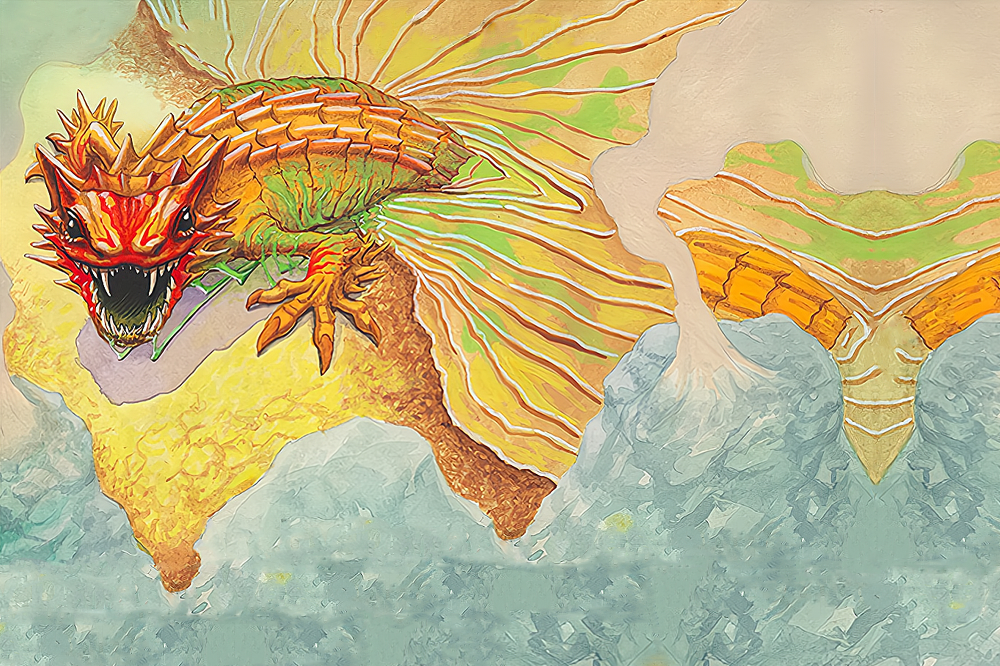

Vengeance as a Burning Plague
A Spirit of vengeance, anger, and retribution. In its incarnation as a Burning Plague, it slumbers in a simmering volcanic pool, awakening at unpredictable intervals.... or when roused through supplication by one wronged. Most Dahan consider this foolhardy, for it vents its wrath on entire communities, and its pestilence may spread anywhere. Clans with a close relationship to Hearth-Vigil have less to fear, but still deem it wise - and humane - not to push their luck.
It is unclear whether its recent waking is due directly to the ravaging of the Invaders or to some Spirit's pleas.
SETUP:
1 of your {presence} starts the game already Destroyed. Put 2 {presence} on your starting board: 1 in a land with {blight}, 1 in a Wetland without {dahan}.
Play Style:
Starts slow, facing an early choice whether to stop Builds (with {disease}) or let them happen (to generate {fear-icon} and keep {disease} on the island). Grows to be very effective at tearing into heavily-populated lands with lots of {blight} and/or {disease}, but setting those up may require some care... and make other Spirits unease, with how much {blight} is piling up.
COMPLEXITY
High
|
Summary of Powers
|
|
|
|
|
|
|
OFFENSE
|
CONTROL
|
FEAR
|
DEFENSE
|
UTILITY
|